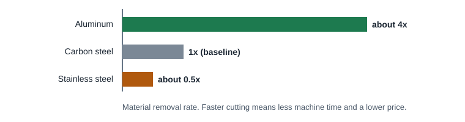
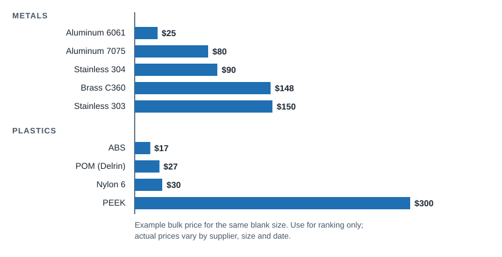

CNC Machining
Machining Materials
Material choice sets both the raw stock price and how fast the part can be cut. Soft, free-machining materials are cheaper to machine; choose harder or exotic alloys only when the application needs them.
Machinability and stock price


- Machine time usually outweighs material cost on prototypes. On production runs, free-machining grades (303 stainless, C360 brass, 12L14 steel) often win even at a higher stock price because cycle times are much shorter.
- Plastics are easy to cut and polyethylene can be about one third the cost of 6061, but plastics hold tolerance less well and can warp after machining.
- Exotics (titanium, Inconel, PEEK, PEI) cost more as stock and to machine. Use them only where heat, strength-to-weight or chemistry demands it.
Metals
| Material | Machinability | Key properties | Typical uses |
|---|---|---|---|
| Aluminum 6061-T6 | Excellent | Good strength, corrosion resistant, weldable, anodizes well, low cost | Brackets, housings, fixtures, general parts |
| Aluminum 7075-T6 | Excellent | Much higher strength and hardness, less corrosion resistant, not weldable | Aerospace, high-load parts, molds |
| Brass C360 | Excellent (free machining) | Low friction, corrosion resistant, conductive | Fittings, valves, bushings, electrical parts |
| Copper C101 / C110 | Fair (gummy) | Highest electrical and thermal conductivity, expensive | Bus bars, heat spreaders, electrodes |
| Steel 1018 (low carbon) | Good | Low cost, weldable, case hardenable | Shafts, pins, fixtures, general structural |
| Steel 4140 (alloy) | Good | High strength and toughness, through hardenable | Gears, axles, tooling, high-load shafts |
| Stainless 303 | Good (free machining) | Corrosion resistant; sulfur added for chip breaking; not weldable | Fasteners, fittings, production turned parts |
| Stainless 304 / 304L | Fair | General corrosion resistance, weldable, work hardens | Food, medical, enclosures |
| Stainless 316 / 316L | Fair | Better chemical and marine resistance than 304 | Marine, chemical, medical |
| Stainless 17-4 PH | Difficult | High strength, heat treatable, good corrosion resistance | Aerospace, valves, high-strength parts |
| Titanium Ti-6Al-4V | Difficult | Best strength to weight, biocompatible, high temperature | Aerospace, medical implants, racing |
Plastics
| Material | Key properties | Typical uses | Machining notes |
|---|---|---|---|
| POM / acetal (Delrin) | Stiff, low friction, low moisture uptake, dimensionally stable | Gears, bearings, rollers, fixtures | Machines beautifully; first choice for precise plastic parts |
| ABS | Tough, impact resistant, low cost | Housings, prototypes of molded parts | Easy to machine; lower heat resistance |
| Nylon 6 / 6/6 | Wear and impact resistant, absorbs moisture | Wear pads, gears, sprockets | Moves with humidity; tolerance accordingly |
| Polycarbonate (PC) | Clear, very impact resistant | Covers, light pipes, guards | Machined faces are matte; polishing costs extra |
| Acrylic (PMMA) | Clear, stiff, scratch resistant | Display, optics, windows | Brittle; chips at edges and thin walls |
| UHMW / HDPE | Very low friction, chemical resistant, cheap | Wear strips, guides, cutting boards | Soft and springy; tolerances loose |
| PTFE (Teflon) | Lowest friction, chemical resistant | Seals, insulators | Creeps and moves; hard to hold tolerance |
| PEI (Ultem) | High heat, flame resistant, strong | Electrical, aerospace, medical | Expensive; glass-filled grades available |
| PEEK | Top heat, chemical and strength performance; can replace metal | Medical, semiconductor, aerospace | Very expensive stock (about 5x other engineering plastics) |
| Glass-filled grades | Stiffer, more stable | Structural plastic parts | Abrasive; wears cutters faster |
Removing a lot of material from one side of a plastic plate releases stress and bows the part. Keep walls even, machine symmetrically where possible and allow looser tolerances than for metal.
Substitution tips
| If you specified | Consider | When |
|---|---|---|
| 17-4 PH stainless | 304 or 316L | High strength is not critical |
| Copper | Aluminum (6061 or 6101) | Good conductivity is enough; much easier to machine and cheaper |
| 4140 for hardness | 1018, case hardened | Only a hard surface is needed |
| 304 stainless, turned in volume | 303 stainless | No welding; much faster machining |
| Steel for small fittings | C360 brass | Moderate loads; free machining, no plating needed |
| 7075 aluminum | 6061 aluminum | Strength margin allows it; cheaper stock, weldable |
| Titanium | 7075 aluminum or stainless | Weight or temperature is not the driver |
| PEEK or PEI | POM or nylon | No high heat or harsh chemicals |
Also consider which finish you need: aluminum anodizes, stainless passivates, steel needs a coating to resist rust. See Finishes.
ProtoLabs Definitive Guide to CNC Machining and Design Essentials (material notes, substitutions) · ProtoLabs "15 Design Tips to Reduce the Cost of CNC Machining" (bulk material price example) · Xometry CNC Machining Design Guide (relative machining speeds).